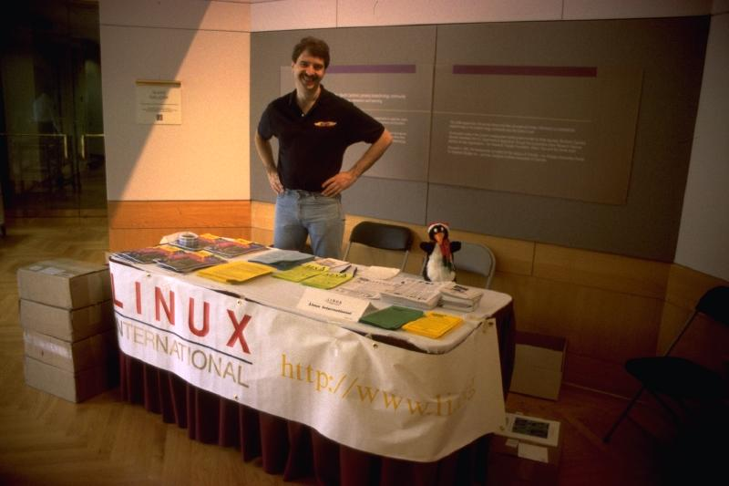
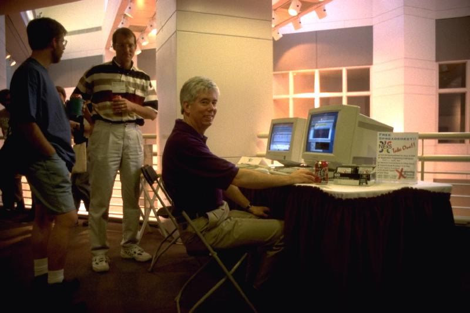
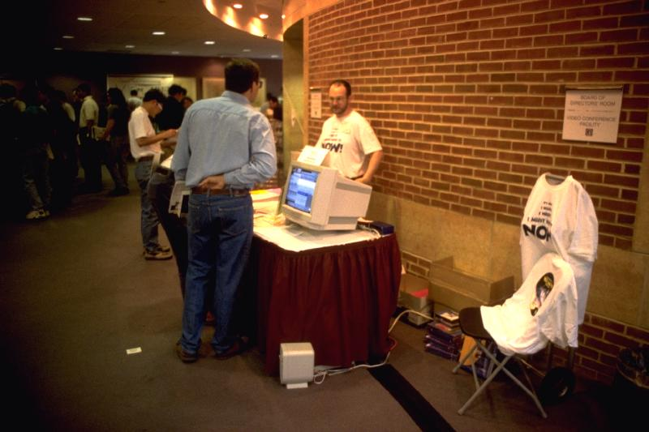
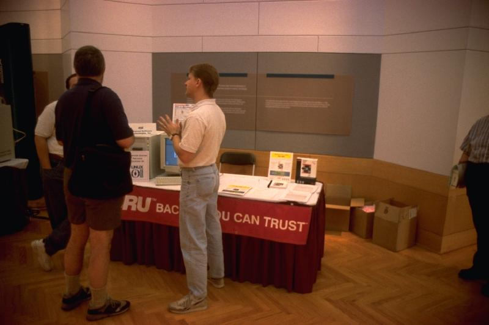
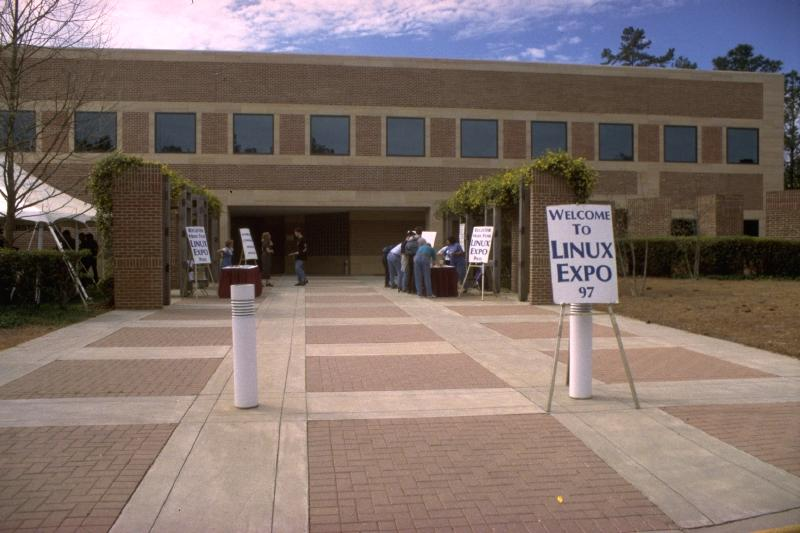
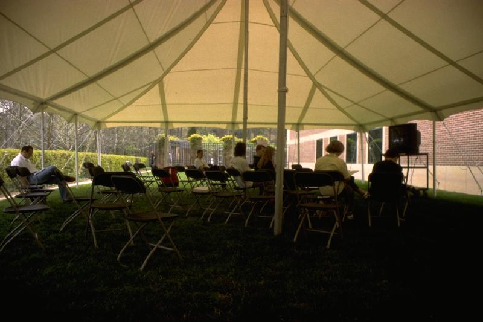
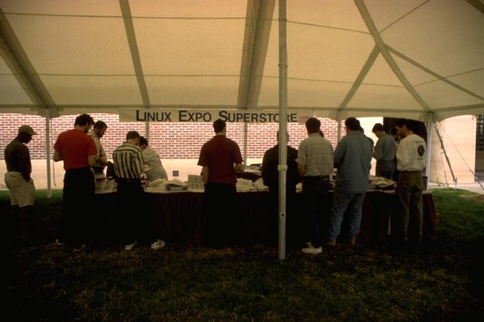

Linux Expo 97 Photo Album

...Steve DuChene of the Atlanta Linux Enthusiasts group at the Linux International Booth

Good Old North Carolina Talent! The NeXS Spreadsheet Booth

WGS Linux Shopping Mall

BRU Booth

Cyclades Booth with Doris Li

Linux Expo Entrance

....there was seating at no charge in several viewing areas both inside and outside, and at no charge!! This particular outdoor viewing area was popular with the bare-foot, frisby-throwing crowd....

....hats, coffee mugs, T-shirts ("Expose yourself to Linux", with the Penguin doing the appropriate thing both front and back), bumper stickers, and brand new copies of "MAXIMUM RPM".....